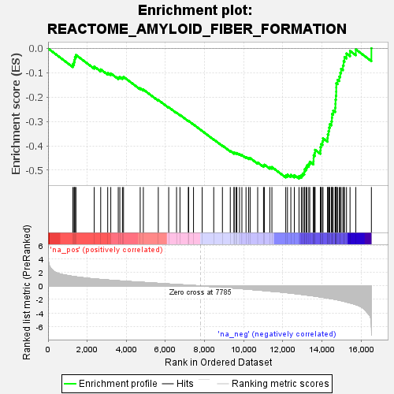
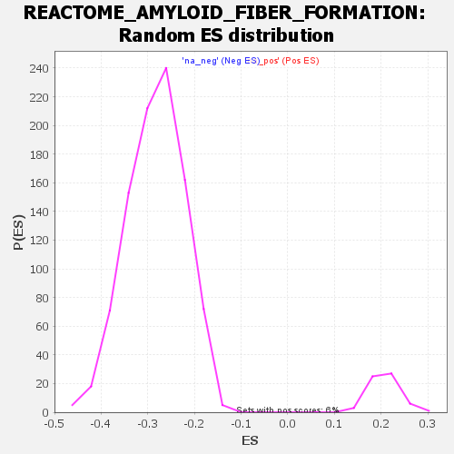

| | | Dataset | all_genes |
| Phenotype | NoPhenotypeAvailable |
| Upregulated in class | na_neg |
| GeneSet | REACTOME_AMYLOID_FIBER_FORMATION |
| Enrichment Score (ES) | -0.53501254 |
| Normalized Enrichment Score (NES) | -1.8899926 |
| Nominal p-value | 0.0 |
| FDR q-value | 0.003256572 |
| FWER p-Value | 0.11 |
Table: GSEA Results Summary

Fig 1: Enrichment plot: REACTOME_AMYLOID_FIBER_FORMATION
Profile of the Running ES Score & Positions of GeneSet Members on the Rank Ordered List
| SYMBOL | RANK IN GENE LIST | RANK METRIC SCORE | RUNNING ES | CORE ENRICHMENT | | 1 | PRKN | 1264 | 1.419 | -0.0646 | No |
| 2 | ADAM10 | 1326 | 1.392 | -0.0563 | No |
| 3 | H3-3A | 1355 | 1.380 | -0.0461 | No |
| 4 | NCSTN | 1372 | 1.371 | -0.0352 | No |
| 5 | PSENEN | 1425 | 1.351 | -0.0267 | No |
| 6 | SIAH1 | 2358 | 1.041 | -0.0744 | No |
| 7 | H2AZ1 | 2690 | 0.960 | -0.0862 | No |
| 8 | UBE2L6 | 3048 | 0.880 | -0.1004 | No |
| 9 | SNCAIP | 3206 | 0.843 | -0.1026 | No |
| 10 | ITM2B | 3587 | 0.764 | -0.1191 | No |
| 11 | RPS27A | 3668 | 0.747 | -0.1175 | No |
| 12 | GGA3 | 3801 | 0.718 | -0.1194 | No |
| 13 | UBA52 | 3857 | 0.706 | -0.1166 | No |
| 14 | MFGE8 | 4709 | 0.551 | -0.1636 | No |
| 15 | APH1A | 4870 | 0.523 | -0.1688 | No |
| 16 | APP | 5634 | 0.385 | -0.2119 | No |
| 17 | UBC | 6166 | 0.285 | -0.2417 | No |
| 18 | TSPAN5 | 6567 | 0.216 | -0.2642 | No |
| 19 | TSPAN14 | 6742 | 0.188 | -0.2731 | No |
| 20 | BACE1 | 7169 | 0.115 | -0.2981 | No |
| 21 | UBB | 7187 | 0.111 | -0.2981 | No |
| 22 | GGA2 | 7434 | 0.069 | -0.3125 | No |
| 23 | CALB1 | 7878 | -0.017 | -0.3393 | No |
| 24 | TSPAN15 | 8468 | -0.124 | -0.3740 | No |
| 25 | H2AC18 | 8912 | -0.208 | -0.3992 | No |
| 26 | B2M | 9314 | -0.291 | -0.4211 | No |
| 27 | TSPAN33 | 9505 | -0.329 | -0.4298 | No |
| 28 | H3-3B | 9510 | -0.330 | -0.4272 | No |
| 29 | SIAH2 | 9610 | -0.352 | -0.4302 | No |
| 30 | H4C11 | 9651 | -0.364 | -0.4295 | No |
| 31 | USP9X | 9786 | -0.391 | -0.4342 | No |
| 32 | CST3 | 9907 | -0.420 | -0.4379 | No |
| 33 | H4C8 | 10118 | -0.469 | -0.4466 | No |
| 34 | H4C14 | 10252 | -0.501 | -0.4504 | No |
| 35 | H2BC9 | 10328 | -0.517 | -0.4505 | No |
| 36 | H2AX | 10714 | -0.609 | -0.4686 | No |
| 37 | GSN | 11012 | -0.681 | -0.4808 | No |
| 38 | H4C1 | 11059 | -0.692 | -0.4776 | No |
| 39 | H2BC21 | 11333 | -0.770 | -0.4876 | No |
| 40 | H4C13 | 11441 | -0.796 | -0.4872 | No |
| 41 | APH1B | 12149 | -0.983 | -0.5217 | No |
| 42 | H3C4 | 12237 | -1.014 | -0.5183 | No |
| 43 | APOA1 | 12409 | -1.068 | -0.5194 | No |
| 44 | LYZ | 12587 | -1.126 | -0.5205 | No |
| 45 | H2BC12 | 12827 | -1.214 | -0.5245 | Yes |
| 46 | HSPG2 | 12946 | -1.255 | -0.5209 | Yes |
| 47 | H4C12 | 13014 | -1.279 | -0.5139 | Yes |
| 48 | APOE | 13097 | -1.310 | -0.5076 | Yes |
| 49 | H2BC17 | 13107 | -1.313 | -0.4968 | Yes |
| 50 | H3C6 | 13182 | -1.345 | -0.4897 | Yes |
| 51 | H2BC14 | 13229 | -1.363 | -0.4807 | Yes |
| 52 | H2BC3 | 13325 | -1.395 | -0.4744 | Yes |
| 53 | H4C2 | 13377 | -1.412 | -0.4653 | Yes |
| 54 | FURIN | 13565 | -1.485 | -0.4639 | Yes |
| 55 | H2BC13 | 13571 | -1.489 | -0.4513 | Yes |
| 56 | H2BC11 | 13574 | -1.491 | -0.4386 | Yes |
| 57 | SORL1 | 13636 | -1.520 | -0.4291 | Yes |
| 58 | H3C12 | 13646 | -1.524 | -0.4165 | Yes |
| 59 | H2BC10 | 13921 | -1.634 | -0.4191 | Yes |
| 60 | H2BC5 | 13928 | -1.637 | -0.4053 | Yes |
| 61 | H4C5 | 13957 | -1.648 | -0.3928 | Yes |
| 62 | H3C3 | 14026 | -1.683 | -0.3824 | Yes |
| 63 | GGA1 | 14051 | -1.697 | -0.3692 | Yes |
| 64 | H4C9 | 14285 | -1.801 | -0.3678 | Yes |
| 65 | H2BC7 | 14296 | -1.805 | -0.3528 | Yes |
| 66 | IAPP | 14335 | -1.829 | -0.3393 | Yes |
| 67 | H3C7 | 14369 | -1.845 | -0.3254 | Yes |
| 68 | H3C1 | 14400 | -1.861 | -0.3112 | Yes |
| 69 | H2BC26 | 14486 | -1.895 | -0.3000 | Yes |
| 70 | H2BC4 | 14509 | -1.907 | -0.2848 | Yes |
| 71 | H3C14 | 14517 | -1.912 | -0.2687 | Yes |
| 72 | H2AC8 | 14573 | -1.939 | -0.2553 | Yes |
| 73 | H2AC7 | 14673 | -1.992 | -0.2442 | Yes |
| 74 | H3C10 | 14689 | -2.001 | -0.2278 | Yes |
| 75 | H3C11 | 14693 | -2.002 | -0.2107 | Yes |
| 76 | H2AC14 | 14713 | -2.016 | -0.1944 | Yes |
| 77 | H4C16 | 14727 | -2.025 | -0.1777 | Yes |
| 78 | H2AC4 | 14730 | -2.025 | -0.1604 | Yes |
| 79 | H4C4 | 14732 | -2.027 | -0.1429 | Yes |
| 80 | TGFBI | 14800 | -2.066 | -0.1291 | Yes |
| 81 | H3C2 | 14885 | -2.125 | -0.1159 | Yes |
| 82 | H4C3 | 14934 | -2.159 | -0.1002 | Yes |
| 83 | H2BC6 | 14976 | -2.181 | -0.0838 | Yes |
| 84 | H2AC19 | 15071 | -2.247 | -0.0702 | Yes |
| 85 | H2BC15 | 15107 | -2.270 | -0.0527 | Yes |
| 86 | H3C13 | 15151 | -2.304 | -0.0354 | Yes |
| 87 | H2AC20 | 15254 | -2.386 | -0.0210 | Yes |
| 88 | H2BC8 | 15434 | -2.515 | -0.0102 | Yes |
| 89 | H2AC6 | 15731 | -2.781 | -0.0041 | Yes |
| 90 | H3C8 | 16526 | -6.120 | 0.0004 | Yes |
Table: GSEA details [plain text format]

Fig 2: REACTOME_AMYLOID_FIBER_FORMATION: Random ES distribution
Gene set null distribution of ES for REACTOME_AMYLOID_FIBER_FORMATION